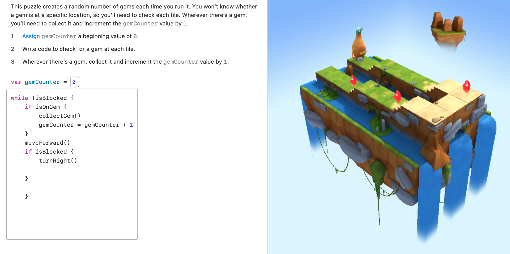
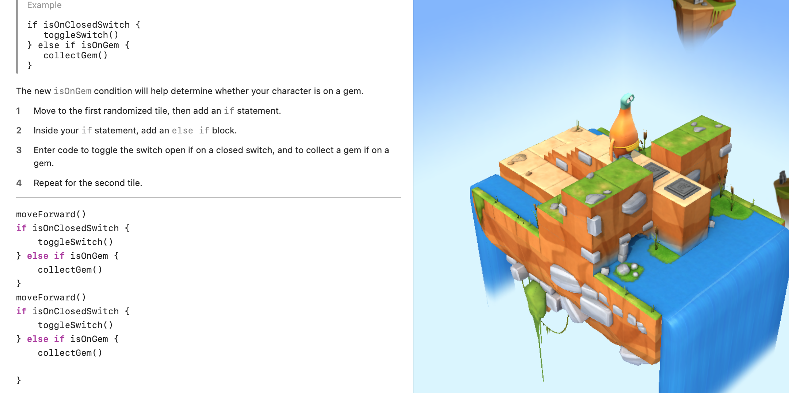

Sean Gordon's Portfolio - Unit 1
This page showcases work from Unit 1, including concepts like Commands, Loops, Conditionals, and more.


Concepts Covered in Unit 1
- Commands: Instructions that the computer follows to perform a specific task.
- For Loops: A control flow statement for repeating a block of code a certain number of times.
- Conditionals: Statements that execute different blocks of code based on whether a condition is true or false.
- Logical Operators: Symbols (like &&, ||, !) used to combine or invert conditions in code.
- Variables: Containers for storing data values, which can be referenced and manipulated in a program.
- Types: Different kinds of data (like integers, strings, and booleans) that dictate what operations can be performed on the data.
- Initialization: The process of assigning an initial value to a variable.
- Functions: Blocks of code designed to perform a specific task when called.
- Parameters: Variables passed into functions to provide input for processing.